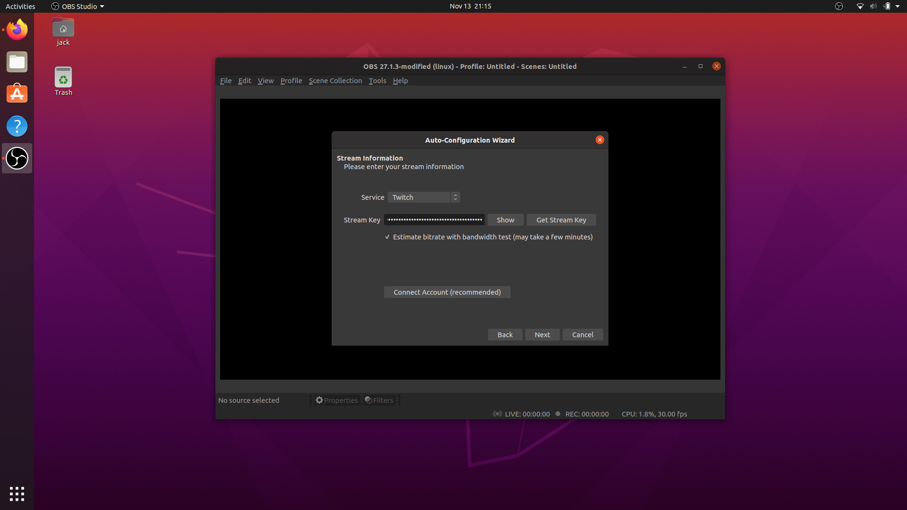

-
On Ubuntu 20.04 and up, OBS Studio can be found on the Ubuntu Software application

-
When we click on OBS Studio, we are shown a description and image of the application is shown.
We will install OBS using the green Install button found on this page

-
After the download and installation is finished, OBS Studio can be found by pressing the "Show Applications" button (3x3 grid on bottom-left of screen).
This means the Ubuntu Software application was able to successfully install OBS Studio

-
When OBS Studio is launched for the first time, the application successfully opens.
A popup also appears asking us if we want to reset the UI. As this is the first time OBS has been opened, there is no reason for this popup to appear, and is worth noting as an issue.
I clicked Yes to reset the UI

-
After "resetting" the UI, an "Auto-Configuration Wizard" appears. I left this on the default setting (Optimize for streaming).

-
The wizard gives us a popup to connect a streaming service. I chose Twitch. When I tried to connect my account (the reccomended option), the following Twitch Login popup showed:
However, when I entered my login info, I received the following error:

I next tried the alternative option, using a stream key. The "Get Stream Key" button opens Twitch's Creator Dashboard, where the stream key can be found

I paste the stream key in. This does not throw any errors, and I continue the Auto-Configuration Wizard
 -
The Wizard then runs bandwidth tests to apply ideal settings for streaming:

After this has finished, we are shown the results of the bandwidth testing's findings, and are given an option to apply the settings
I choose to click "Apply Settings"

-
Next, the following message is shown:
I click "Yes", and another popup appears. The settings are already prefilled with default values. I leave the values unchanged and click "Ok"

-
After settings the WebSockets Server Settings, no more popups appear, and OBS appears as the following:

This concludes the installation and first-time setup of OBS Studio